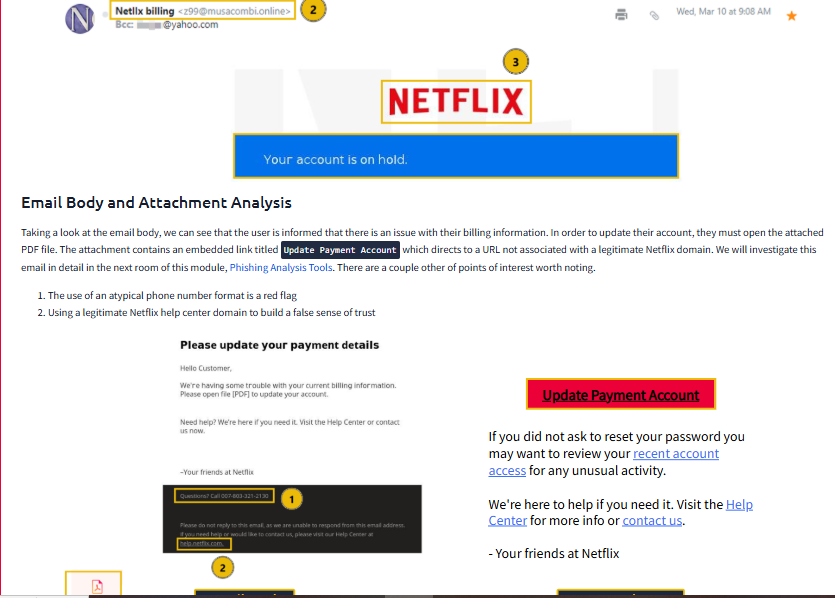

Lab 04: Inbound Phishing Analysis & Header Forensics
- Date: October 2026
- Category: Phishing Triage & Threat Vector Analysis
- Framework Mapping: MITRE ATT&CK [T1566.001 - Spearphishing Attachment] / [T1566.002 - Spearphishing Link] / [TA0001 - Initial Access]
- Tooling: RFC 822 Header Parsers, URL Defanging, CyberChef, Static Document Analysis
1. Executive Summary & Objective
Phishing remains the primary initial access vector exploited by threat actors to harvest enterprise credentials, establish command-and-control footholds, and drop secondary payloads. Modern phishing campaigns leverage brand impersonation, visual typosquatting, and multi-stage delivery chains to bypass automated boundary email gateways.
The objective of this investigation was to triage suspicious inbound emails, dissect RFC 822 header metadata for sender-address discrepancies, trace multi-hop URL redirections, analyze tracking web beacons, and evaluate weaponized document attachments across multiple real-world phishing scenarios.
2. Attack Vectors & Telemetry Analyzed
- Target Mailbox Environment: Standard Enterprise Gateway / Yahoo / Outlook
- Key Protocols: SMTP, RFC 822, MIME
- Primary Attack Surfaces:
- Display Name Spoofing & Visual Impersonation (
Netllx billing) - Tracking Pixels & Read Receipt Telemetry (
tracking.png) - URL Shorteners & Multi-Stage Redirection Portals
- Malicious Attachments (
.pdf,.dot,.xlsx)
3. Investigation & Forensic Walkthrough
Phase 1: Header Analysis & Sender Authentication Discrepancies
Triage of suspicious transaction receipts and account suspension warnings revealed deliberate discrepancies between the asserted display names and the authentic originating addresses:
- Impersonated Brand:
service@paypal.comrouted from envelope sendersultanbogor.com. - Typo-Squatted Impersonation: A simulated Netflix suspension notice used the display name
Netllx billing(substituting the letters "fi" with "ll") while routing from the unauthenticated external domainz99@musacombi.online.

Attackers exploit the default UI behavior of modern mail clients, which prominently display user-configurable display names while concealing the underlying routing path.
Phase 2: Link Obfuscation, Tracking Pixels & Redirection Chains
Inspection of raw HTML bodies exposed multiple obfuscation techniques engineered to evade automated boundary scanning:
- Shortened Redirection URLs: Phishing lures utilized URL shorteners (
https://is.gd/6oCJ4m) to mask destination landing pages during transit. - Web Beacon Telemetry: An embedded 1x1 image (
tracking.pnghosted ondevret[.]xyz) served as an active tracking pixel, silently notifying the adversary that the target mailbox was active. - Multi-Stage Redirection Portals: Clickable lures routed targets through simulated cloud-sharing hops (Citrix $\rightarrow$ OneDrive $\rightarrow$ Adobe) before terminating at an external credential harvesting interface mimicking an enterprise Microsoft Outlook portal.
Phase 3: Weaponized Attachments & Payload Analysis
When direct external links are blocked by strict email gateway filters, adversaries pivot to weaponized attachments:
- Remote Template Ingestion (
.dot): A fake Apple billing notification arrived with a blank email body, delivering a.dotMicrosoft Word Template configured to pull remote malicious macros upon opening. - Macro Execution via Spreadsheet (
.xlsx): A fake DHL courier notice delivered a spreadsheet instructing the victim to enable content, initiating execution of the native Windows binaryregasm.exe.
4. Forensic Findings & Extracted IOCs
| Artifact Type | Raw Indicator | Defanged / Normalized IOC | Context / Threat Intent |
|---|---|---|---|
| Sender Domain | sultanbogor.com |
sultanbogor[.]com |
Unauthorized SMTP relay for PayPal brand spoofing |
| Sender Address | z99@musacombi.online |
z99@musacombi[.]online |
Impersonation of Netflix billing operations |
| Tracking Domain | http://devret.xyz |
hxxp://devret[.]xyz |
Tracking pixel delivery & mailbox enumeration |
| Shortened Link | https://is.gd/6oCJ4m |
hxxps://is[.]gd/6oCJ4m |
URL obfuscation hiding credential landing page |
| Attachment | Apple_Receipt.dot |
Apple_Receipt.dot |
Template injection / macro download vector |
| Child Executable | regasm.exe |
regasm.exe |
Living-off-the-land utility targeted for execution |
5. SOC Analyst Detection & Response Engineering
- Enforce Strict Domain Alignment (DMARC/SPF/DKIM): Configure mail gateway policies to reject or quarantine inbound messages where the RFC 5322
Fromdomain fails SPF alignment or lacks valid DKIM cryptographical signing from the asserted organization. - Block Inbound External Templates & Dangerous Extensions: Restrict inbound mail containing macro-enabled templates (
.dot,.dotm,.xltm) at the secure email gateway (SEG), as legitimate external business correspondence rarely requires foreign template definitions. - Automated URL Defanging & Sandbox Detonation: Ensure security orchestration platforms (SOAR) automatically parse reported
.emlfiles, defang all embedded links, expand shorteners in isolated sandboxes, and query domains against live threat intelligence feeds.